等圧線・高気圧・低気圧・風
気圧が同じ場所を結んだ線を等圧線といいます。地図の等高線と同じような考え方です。
天気図では、等圧線は4hPaごとに引かれ、1000hPaの線は太くなっています。
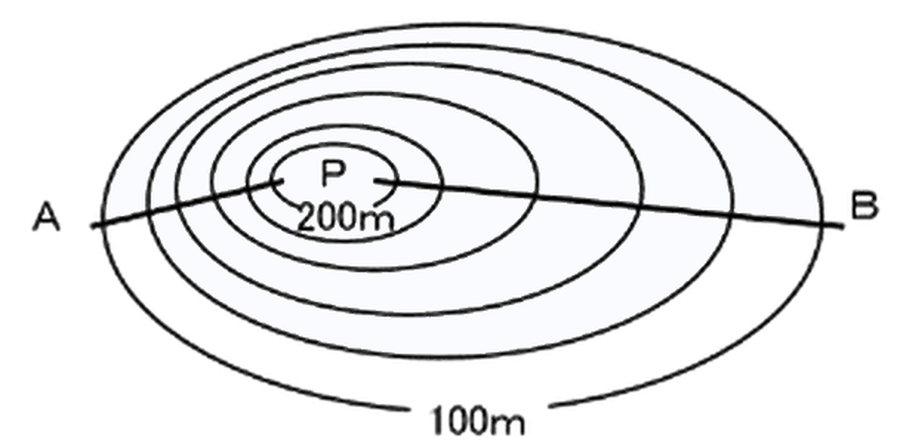
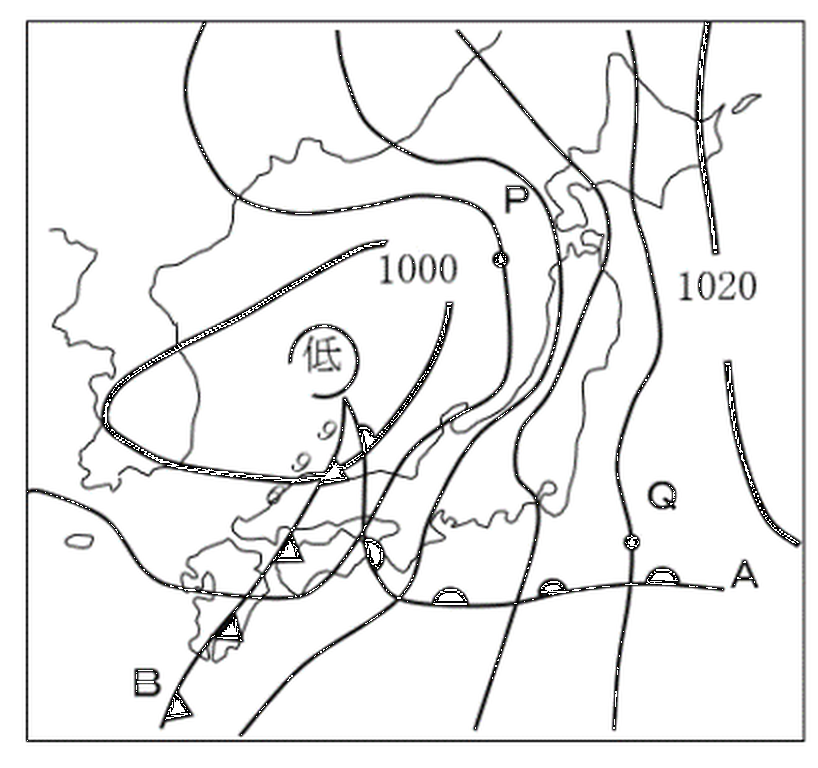
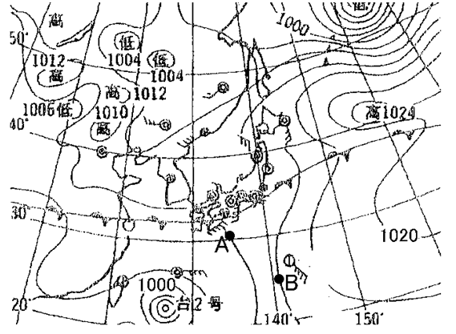
気圧が同じ地点を結んだ線を①といい、間隔が②ところほど風が強い。
まわりより気圧が高いところを高気圧、まわりより気圧が低いところを低気圧といいます。
低気圧の中心では、まわりから風が吹きこんで上昇気流になり、雲ができやすく天気が悪くなります。高気圧の中心では下降気流になり、雲ができにくく天気がよくなります。
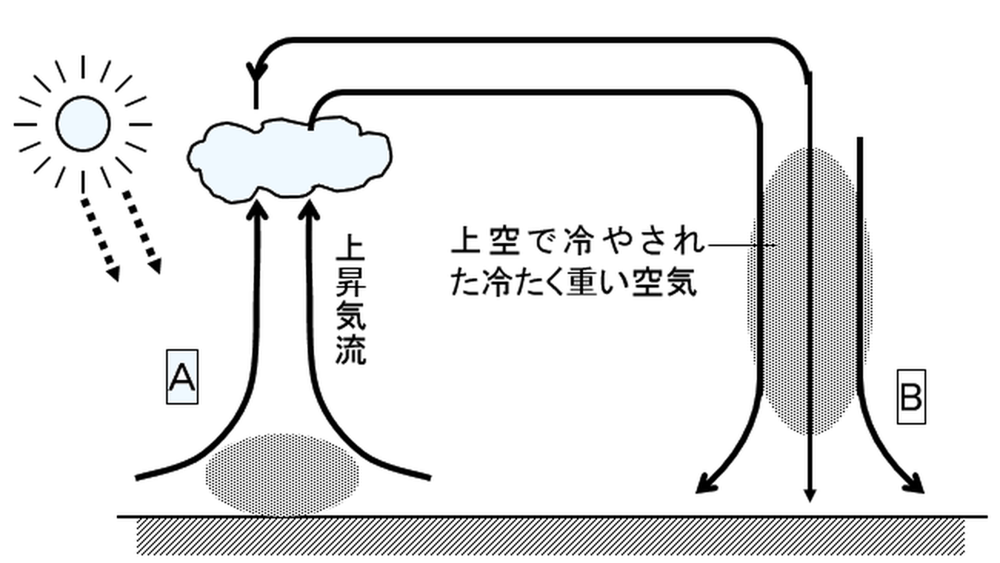
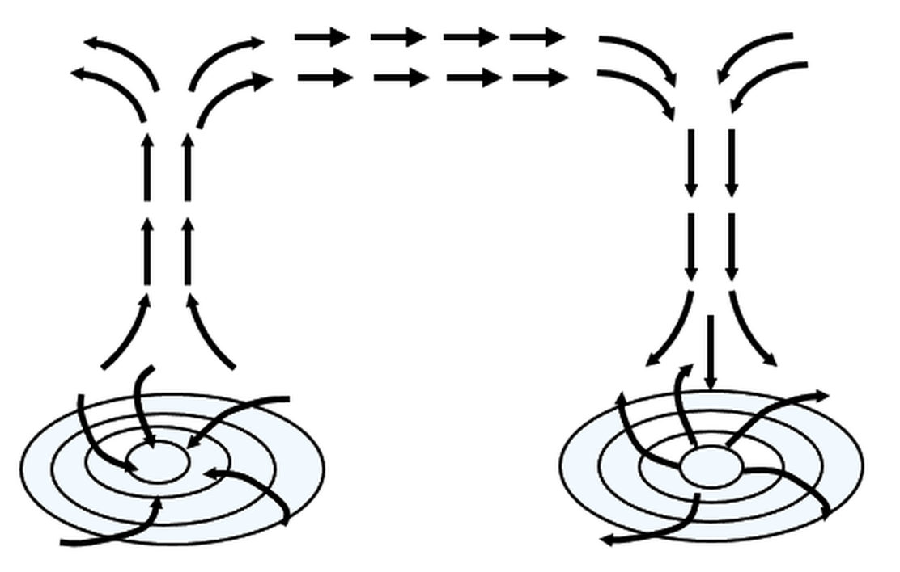
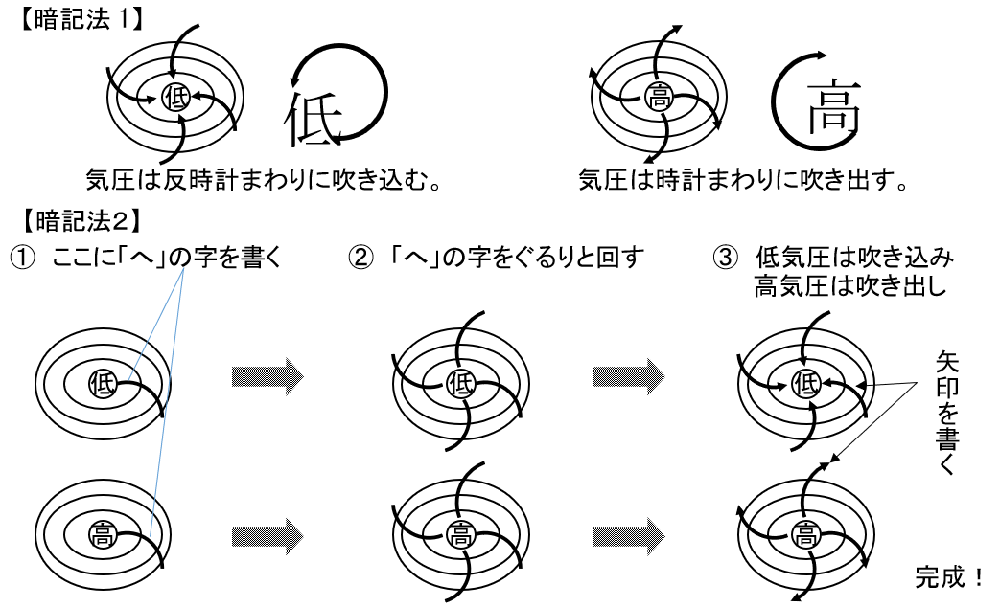
低気圧の中心は①気流で天気が②、高気圧の中心は下降気流で天気がよい。
風は、気圧の高いところから低いところへ向かって吹きます。ただし、地球が自転しているため、等圧線に対してまっすぐには吹きません。
北半球では、低気圧のまわりでは中心に向かって反時計回り（左回り）に吹きこみ、高気圧のまわりでは中心から時計回り（右回り）に吹き出します。
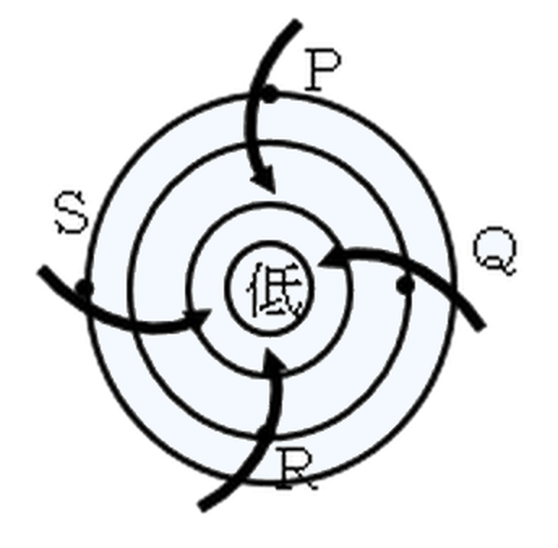
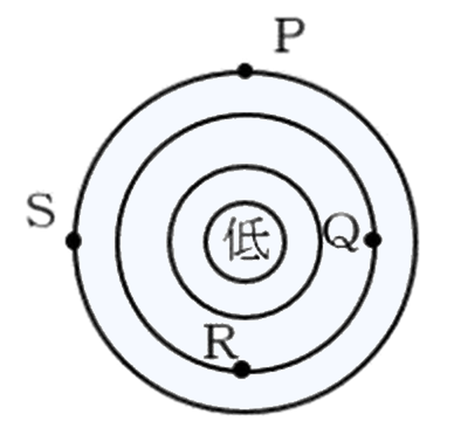
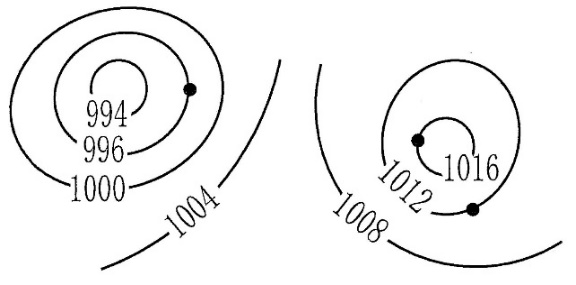
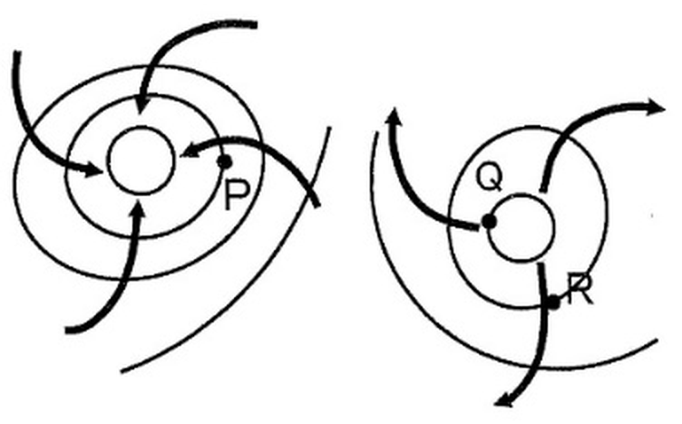
北半球の高気圧のまわりでは、風は①回りに②。
高気圧と低気圧の「気流」と「天気」をまとめましょう。
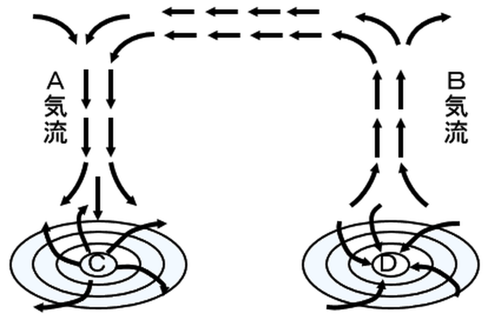
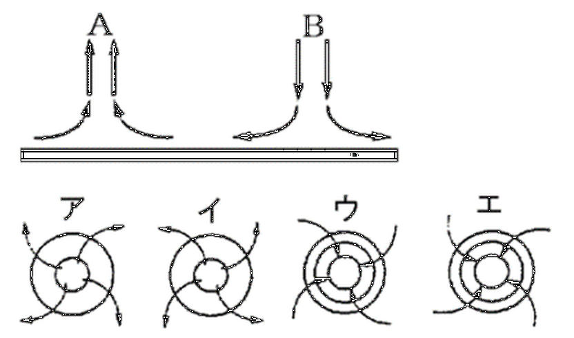
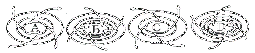
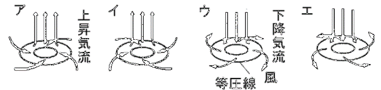
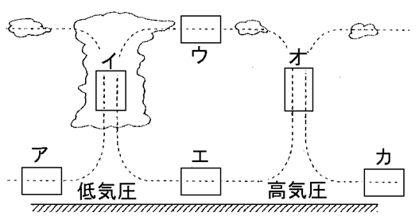
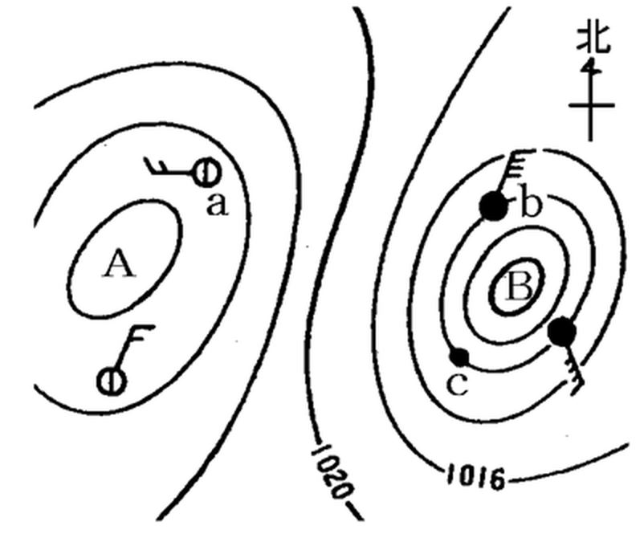
低気圧では風が①、上昇気流が生じて②が発生しやすい。